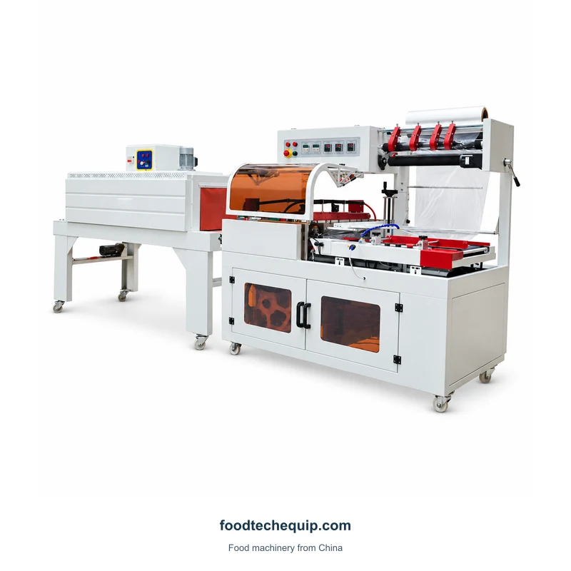
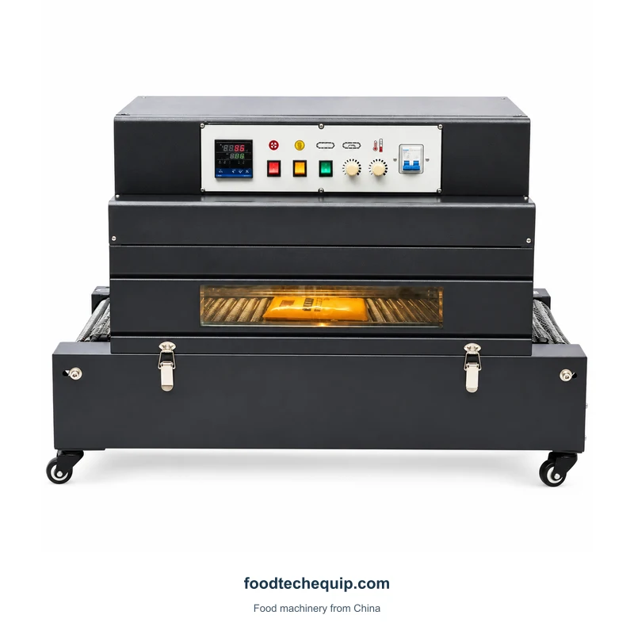
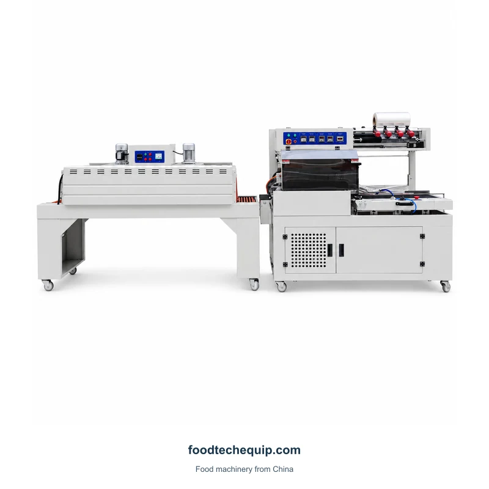
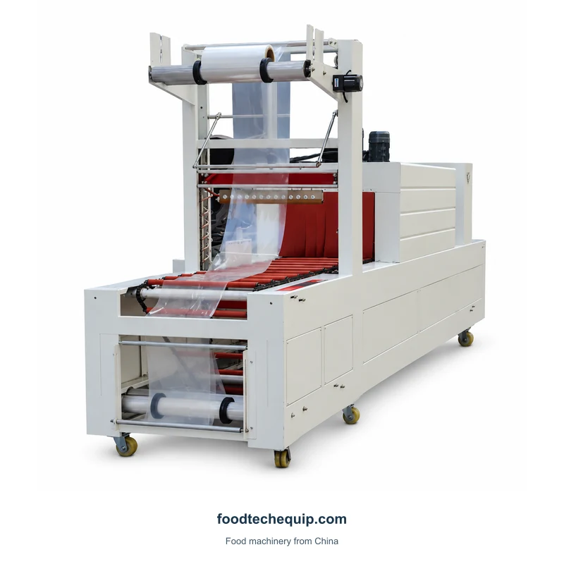

Envasado retráctil
Línea de sellado de film y envasado retráctil
Línea de sellado y envasado retráctil de film con tramos de transportador y túnel.
Ver equipo
Selecciona la imagen para verla más grande.
Una máquina de envasado retráctil de cámara con ventana de visualización y sección de rodillos.
Selección de equipos · Guía de instalación · Soporte remoto
Explorar información del producto ↓Describir el contorno del paquete y cómo el operador lo ubicará en el área de trabajo. Analice la configuración del 4020 con la película real y la presentación del paquete terminado.
Planificar tareas de encogimiento, sellado de cajas, flejado y codificación ↗| Parámetro | Valor | Unidad | Configuración |
|---|---|---|---|
| Velocidad de empaquetado | 18 | envases/min | 4020 |
| Ancho máximo de película | 1000 | mm | 4020 |
El retractilado, el cierre de cajas y el flejado son tareas separadas del embalaje y expedición. Mostrar el paquete entrando y saliendo de cada paso solicitado, incluido el traslado entre estaciones.

Línea de sellado y envasado retráctil de film con tramos de transportador y túnel.
Ver equipo
Línea de sellado y envasado retráctil de film con portarrollos, transportador y túnel de retractilado.
Ver equipo
Equipo de envasado retráctil que combina manipulación de film, transportador y sección de túnel.
Ver equipo